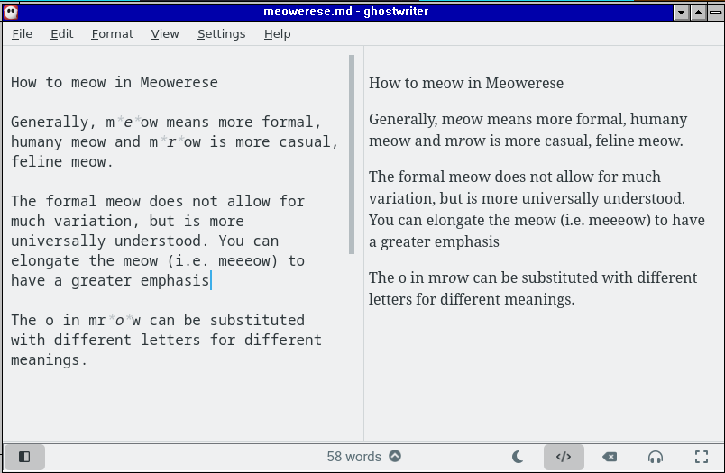

Meowerese v1
Meower's Notes
This is a really really old version of meowerese back when I only used it to refer to my cat sound based slang. I did also have what is now considered to be meowerese back then, however I never put too much attention to like "standardizing" it too much until a bit later when I was explaining it to my friend.
Here's a screenie of me working on this very document in ghostwriter:

How to meow in Meowerese
by Meower :3
Generally, meow means more formal, humany meow and mrow is more casual, feline meow.
The formal meow does not allow for much variation, but is more universally understood. You can elongate the meow (i.e. meeeow) to have a greater emphasis (i.e. [examples here]). This meow is also used to make puns, and derived sayings, as it is more human language sounding. A dictionary can be found at the bottom of this document.
The casual mrow is very flexible when it comes to expressing different sounding meows, as it is more naturally catsy sounding than meow. Below are some common example variations of mrow (pronunciation hints in brackets):
mraow (mrah-oh) - more expressive, intense mrow
mrrrrow - more happy, energetic mrow
mrowwww - more somber, tired mrow
mra (mrah)- quick questioning/interjective mrow
mraaa (goes slowly up in pitch)- frustrated-ish mrow
mrahh (goes up then down in pitch) - "I see" mrow
mrrm (murr-m) - "Hmm"/"I see" mrow
As you can see, all of them read out quite differently. As a general ground rule, they all start off with "mr", although there do exist exceptions like maorm (which is kind of like a shout). I literally just made that up to make an exception but I guess that works.
You can change the o of a mrow into several different other vowels. An ao makes the mrow more firm, and an a makes it even more firm. An e makes it less feline sounding. A u or oo kinda sounds like a cow.
If a mrow has only more r's (like mrrrow), then it is a more happy mrow. The more r's, the stronger the feeling, but after a point (around mrrrrrrow), it starts getting weaker as it gets more drawn out.
If a mrow has only more w's (like mrowww), then it is a more sad mrow. Like with only more r's, it gets weaker if too drawn out.
If you omit the final w, then it is a more brief mrow. This is generally for expressing surprise (like mra).
Adding an m at the end (like mrrrowm) gives a more strong, sharp mrow. This effect is far less effective on a sad mrow (mrowwwm is not as sharp as mrrrowm). You cannot add an m to the end of a w-less mrow unless it also lacks a vowel (mram is not natural, while mrrm is like a murmur).
Meow Vocabulary
meow - standard catsy expression, often used as a stand in for more obscene words by me
meowity meow - happy expression
meowing meow - lower level swear
meowing meows - higher level swear